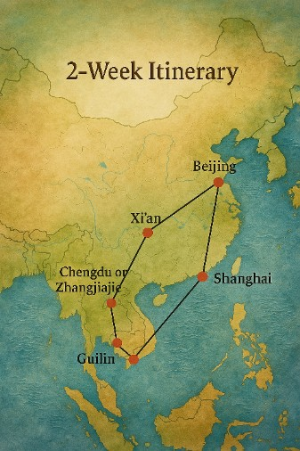

Grand Tour of China
Tour Map

Tour Highlights
- Explore the Great Wall and Forbidden City in Beijing.
- See the Terracotta Warriors in Xi’an.
- Marvel at the karst peaks on the Li River in Guilin.
- Visit the Giant Pandas in Chengdu (or hike Zhangjiajie).
- Experience modern and ancient Shanghai.
Day-by-Day Itinerary
- Day 1: Arrive in Beijing.
- Day 2: Tiananmen Square, Forbidden City, Peking Duck dinner.
- Day 3: Great Wall at Mutianyu, Summer Palace.
- Day 4: High-speed train to Xi’an.
- Day 5: Terracotta Army, Muslim Quarter, Xi’an Wall.
- Day 6: Flight/train to Zhangjiajie or Chengdu.
- Day 7: Explore Zhangjiajie Forest Park or Panda Research Base.
- Day 8: Travel to Guilin, relax by the river.
- Day 9: Li River cruise to Yangshuo, overnight stay.
- Day 10: Cycle around Yangshuo, see countryside villages.
- Day 11: Train or flight to Shanghai.
- Day 12: Visit The Bund, Yu Garden, Nanjing Road.
- Day 13: Day trip to Zhujiajiao water town or free time.
- Day 14: Final shopping, flight home.